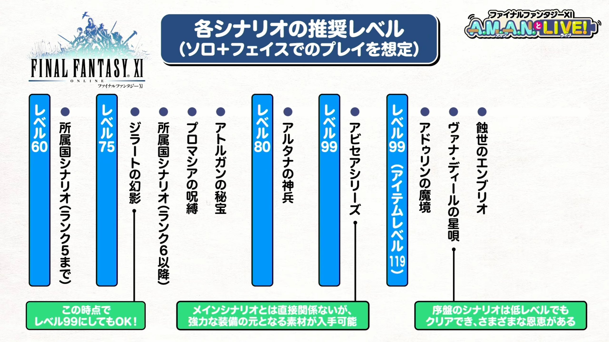

시나리오별 권장 레벨

FF11 공식에서 배포한 시나리오별 권장 레벨 표입니다.
아래는 해당 표의 내용을 한국어로 옮긴 것입니다.
시나리오별 권장 레벨에 대하여
시나리오별 권장 레벨은 FF11 공식에서 각 시나리오 미션을 진행할 때 무리가 없다고 판단한 최소한의 레벨입니다.
물론, 권장은 권장일 뿐, 해당 권장 레벨이 정답은 아닙니다.
더 낮은 레벨로 미션에 돌입할 수도 있고 (다만 이 길은 꽤 어려울지도 모릅니다...) 미션을 하기 전 미리 레벨링을 진행해두어도 문제는 없습니다.
해당 표는 어디까지나 참고용이므로, 자신만의 플레이 방식에 적절히 활용해보세요.
♦ 레벨 60 : 삼국 미션 전반부 (랭크5 까지)
♦ 레벨 75 : 삼국 미션 후반부 (랭크6 부터) 지라트의 환영 프로마시아의 주박 아토르간의 비보
♦ 레벨 80 : 알타나의 신병
♦ 레벨 99 (아이템 레벨 119 이하) : 아비세아 시리즈 메인 시나리오와 직접적 관계는 없으나, 강력한 장비의 재료를 입수할 수 있습니다.
♦ 레벨 99 (아이템 레벨 119 이상) : 아두린의 마경 바나딜의 별노래 초반 시나리오는 낮은 레벨도로 클리어 가능하며, 다양한 추가 효과를 습득할 수 있습니다. 식세의 엠브리오
빠른 시나리오 진행을 원한다면...
60레벨로 삼국 미션 전반부를 끝낸 후 시나리오 진행을 잠시 멈추고, 먼저 99레벨까지 육성을 마쳐둔 뒤 다음 시나리오들을 진행하시는 걸 추천드립니다.
물론 이 또한 정답은 아니므로 원하는 템포에 맞춰서 플레이해주세요.
자주 쓰는 용어들
BF/배틀 필드 | Battle Field
미션 등에서 사용되는 인스턴스 배틀 전용 지역입니다. 특정 지역의 사물을 조사하는 등의 행위를 통해 입장할 수 있습니다.
비박 | Bivouac | ビバック
'아두린의 마경' 공략 업데이트 시 설명이 추가될 예정입니다.
사일런트 오일 | Silent Oil | サイレントオイル
스니크 상태를 부여합니다.
서바이벌 가이드 | Survival Guide
스니크 | Sneak | スニーク
백마법의 일종, 또는 해당 백마법이나 사일런트 오일을 통해 부여할 수 있는 상태를 가리킵니다.
청각 감지 몬스터를 회피하기 위하여 사용됩니다.
시각 감지
유저의 모습을 감지하여 공격합니다.
시야 범위에서 벗어나거나 인비지 상태를 부여하여 감지를 피할 수 있습니다.
시각 감지(강)
시각 감지의 상위 호환으로, 인비지 상태를 무시하고 모습을 감지하여 공격합니다.
아웃포스트 | Outpost | アウトポスト
아웃포스트 워프 | Outpost Warp | OPテレポ
각지의 아웃포스트로 텔레포 할 수 있는 기능입니다. 이용하기 위해서는 특정 조건을 만족해야 합니다.
1. 출발지/도착지의 보급 퀘스트를 완료했을 것.
2. 이동하려는 지역의 규정 레벨보다 현재의 잡 레벨이 높을 것.
에미넌스 레코드 | Records of Eminence | エミネンス・レコード
간단한 목표를 설정하여 경험치와 유니티 포인트 등을 얻을 수 있는 컨텐츠입니다.
퀘스트 '시작의 궤적(링크걸기)'를 완료 후 이용 가능합니다.
유니티 워프 | Unity Warp | ウォンテッドエリアへ移動
인비지 | Invisible | インビジ
백마법의 일종, 또는 해당 백마법이나 프리즘 파우더를 통해 부여할 수 있는 상태를 가리킵니다.
시각 감지 몬스터를 회피하기 위하여 사용됩니다.
중요 아이템 | Key Item | だいじなもの
미션이나 퀘스트에 필요한 아이템, 지도, 비공정 탑승권, 게이트 크리스탈 등을 포함합니다. 메인 메뉴에서 확인할 수 있습니다.
채팅 커맨드 /keyitem로 확인할 수 있습니다.
본 가이드 모음에서는 열쇠 이모지로 표기되고 있습니다.
청각 감지
유저가 내는 소리를 감지하여 공격합니다.
스니크 상태를 통해 감지를 피할 수 있습니다.
청각 감지(강)
청각 감지의 상위 호환으로, 스니크 상태를 무시하고 소리를 감지하여 공격합니다.
프로토 웨이포인트
'아두린의 마경' 공략 업데이트 시 설명이 추가될 예정입니다.
프리즘 파우더 | Prism Powder | プリズムパウダー
인비지 상태를 부여합니다.
트러스트 (=페이스)
마법의 일종으로, 필드나 던전, BF에서 NPC의 분신을 소환하여 함께 싸울 수 있는 기능입니다. 솔로 플레이 시 유용합니다.
( FF14의 트러스트/콘텐츠 서포터의 원본이자 모티브가 된 시스템입니다. )
한계 돌파 퀘스트
잡 레벨의 상한 제한을 해제할 수 있는 부가 퀘스트입니다.
파이널 판타지 11은 기본적으로 레벨 상한이 50Lv이며, 현재 최종 레벨 상한이 99Lv까지 올라가 있지만 자동으로 레벨 상한 제한이 해제되지 않는 시스템입니다.
50레벨에 달성한 뒤 추가로 경험치를 얻고 레벨업하기 위해서는 5레벨마다 한계 돌파 퀘스트를 진행해야 합니다.
일반적으로 레벨 상한을 00Lv까지 해제해주는 퀘스트를 00렙 리밋퀘/한계돌파퀘 등으로 부릅니다.
홈 포인트 | Home Point